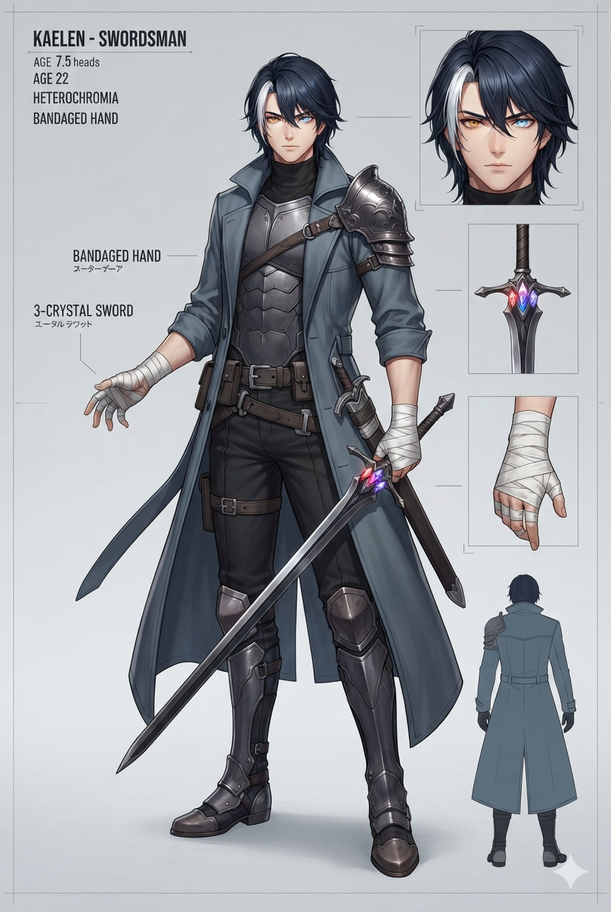
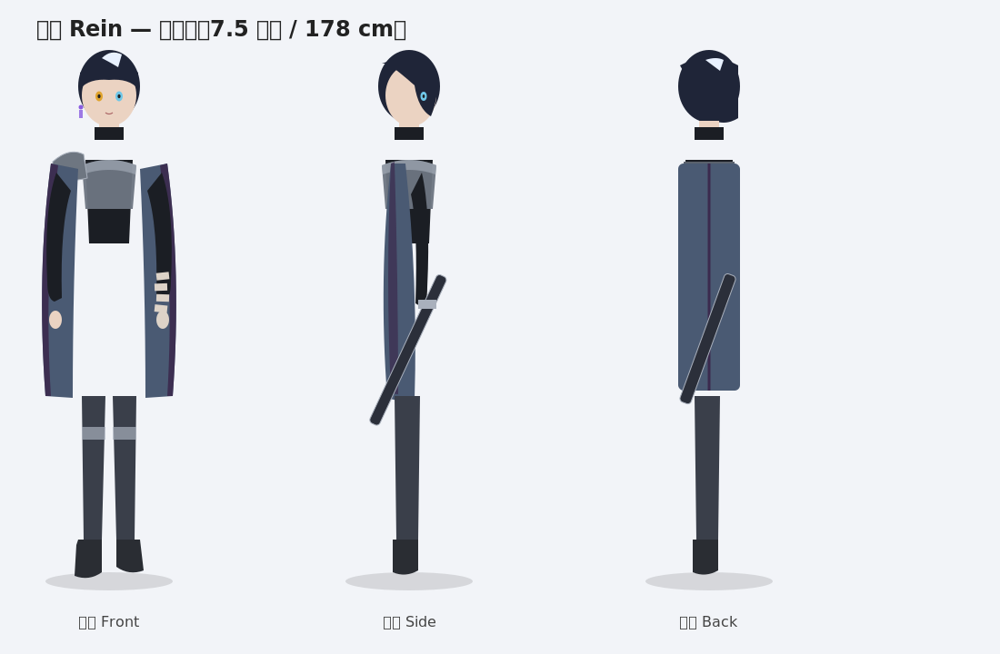
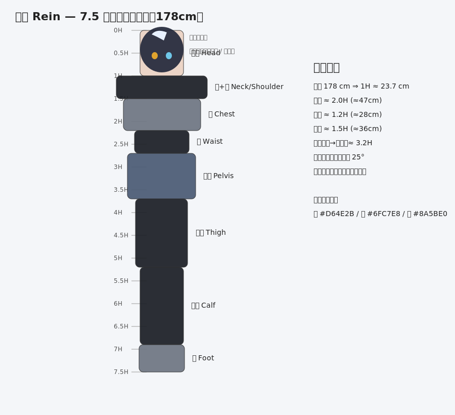
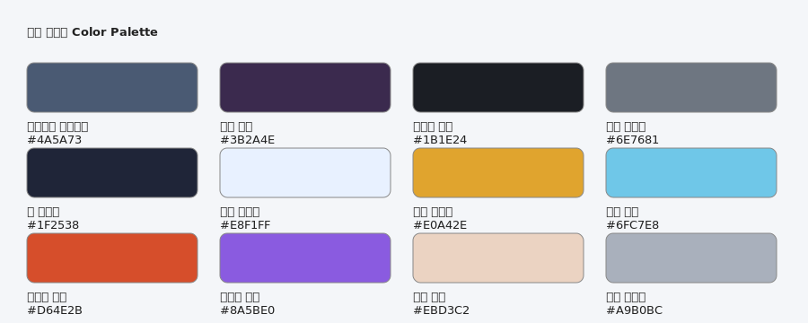

角色：黎恩（Rein）／稱號「嵐刃」 — 三相元素流浪劍士（火 / 冰 / 雷）
男性・22 歲・178 cm 7.5 頭身日系寫實 異色瞳（左琥珀金／右冰藍） 三相之劍「裂空」

說明：此圖為主視覺。頭部（髮型/異色瞳/氣質）與整體氛圍直接採用為標準； 劍改回設定稿之「裂空」（單手長劍、劍格嵌赤/藍/紫三色碎晶），右手需追加設定稿之繃帶。



※ AI 寫實立繪待 profile 配置 fun-codex 圖像 provider 後補生成（prompt 已備妥於 proportion-sheet.md 第 4 節）。